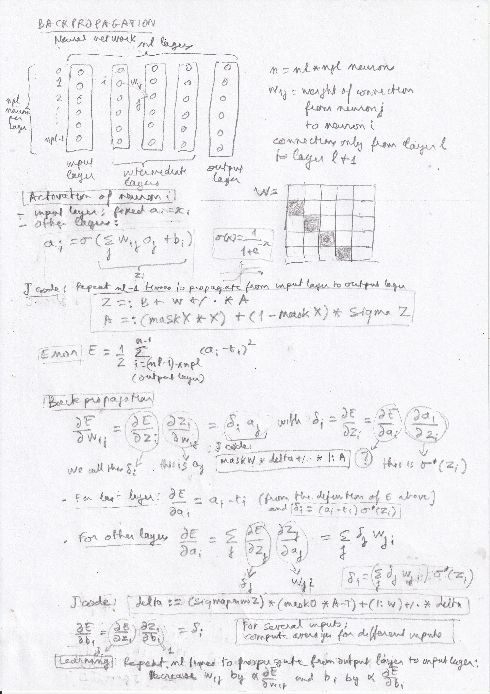

Backpropagation or backward propagation of errorsis a method for tuning the connection weights of a neural network by minimizing the error, the distance between the outputs given by the network and the expected outputs, using gradient descent.
Usually, the neural network is structured in layers, with connections only from neurons in one layer to neurons in the following layer. We will have a different approach, considering a priori that any connection scheme is possible, and introducing the layered structure as a particular connection scheme, represented by a matrix maskW in J code, containing 1 for existing connections and 0 for neurons that are not connected.
Links :|  |
J code :
NB. Backpropagation
NB. See https://www.miximum.fr/blog/introduction-au-deep-learning-2/
load 'stats'
sigma =: 3 : '1 % 1 + ^(-y)'
sigmaprime =: 3 : '(sigma y) * (1 - sigma y)' NB. derivative
nl =: 5 NB. Number of layers
npl =: 6 NB. Number of neurons per layer
n =: nl * npl NB. Total number of neurons
p =: 10
alpha =: 3 NB. Learning rate
nX =: 3 NB. Number of inputs
NB. Masks with 1 for non-zero values
maskW =: (<. (i. n) % npl) =/ (1 + <. (i. n) % npl) NB. Mask of connections : each neuron is connected only to the neurons of next layer
maskB =: (npl#0),(((nl-1)*npl)#1) NB. Mask of biases : no biases for input neurons
maskX =: (npl#1),(((nl-1)*npl)#0) NB. Mask of inputs : only the first layer
maskO =: (((nl-1)*npl)#0),(npl#1) NB. Mask of outputs : only the last layer
W =: maskW * (n,n) $ normalrand n^2 NB. Matrix of connection weights
NB. Element at i-th line and j-th column = weight of connection from neuron j to neuron i
B =: maskB * normalrand n NB. biases
X =: maskX * (? (n,nX) $ p) % p NB. Inputs, i-th column = vector representing the i-th input
T =: maskO * (? (n,nX) $ p) % p NB. Expected outputs
step =: 3 : 0
Z =: B + W +/ . * A NB. Aggregation : add biases and matrix product of weights by activations
A =: (maskX * X) + (1-maskX) * sigma Z NB. Activation : fixed values X for input neurons, sigma applied to aggregation for others
)
NB. One step of backpropagation
NB. delta^L_i = A - T
NB. delta^l_i = sigma'(z^l_i) * sum_j(w^{l+1}_{ji} delta^{l+1}_j
stepdelta =: 3 : 0
NB. delta =: (maskO * A - T) + (sigmaprime Z) * (|: W) +/ . * delta
delta =: (sigmaprime Z) * (maskO * A - T) + (|: W) +/ . * delta
)
NB. Step of learning
steplearn =: 3 : 0
A =: X NB. Initialize activation with input
(step^:(nl-1)) 0 NB. Repeat aggregation and activation nl-1 times
NB. delta^l_i = sigma'(z^l_i) * sum_j(w^{l+1}_{ji} delta^{l+1}_j)
delta =: (n,nX) $ 0
(stepdelta^:nl) 0 NB. repeat backpropagation nl times
avgdelta =: (+/ |: delta) % nX NB. Average delta
NB. Average gradient of weights for nX inputs
NB. dC/dw^l_{ij} = a^{l-1}_j delta^l_i
GW =: maskW * delta +/ . * |: A % nX
NB. Average gradient of biases for nX inputs
NB. dC/db_i = delta^l_i
GB =: maskB * avgdelta
NB. Modifiy weights and biases
W =: W - alpha * GW
B =: B - alpha * GB
)
NB. Repeat learning
(steplearn^:10000) 0
NB. Difference between computed and expected outputs
NB. echo maskO * A - T
echo 'T :'
echo (((nl-1)*npl) + i. npl) { T
echo 'A :'
echo (((nl-1)*npl) + i. npl) { A
echo 'A - T :'
echo (((nl-1)*npl) + i. npl) { A - T
|